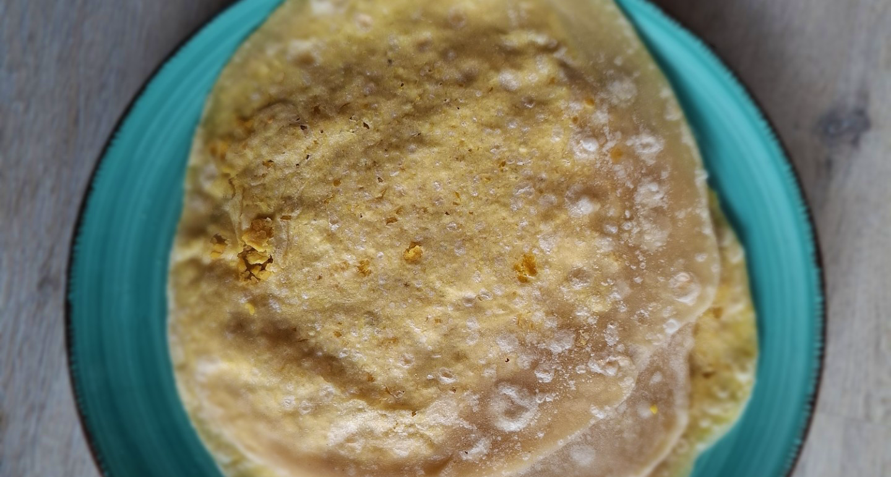

mauritiaanse dholl puri
Superlekker Mauritiaans gerecht, met Indiaase roots.

Bereidingsduur: 270 minuten
Aantal personen: 4
Ingrediënten:
250 gram dholl gram
500 gram bloem
1 eetlepel komijn
1 eetlepel kerrie
hoeveelheid naar wens krieltjes
hoeveelheid naar wens rauwkost
hoeveelheid naar wens spinazie
naar smaak tomatensaus
naar smaak chilisaus
250 gram dholl gram
500 gram bloem
1 eetlepel komijn
1 eetlepel kerrie
hoeveelheid naar wens krieltjes
hoeveelheid naar wens rauwkost
hoeveelheid naar wens spinazie
naar smaak tomatensaus
naar smaak chilisaus
Instructies:
1. Laat de dholl gram een uurtje weken.
2. Verhit 1,5 liter water in een pan en voeg de dholl gram, kerrie en 1 EL zout toe. Laat 45 minuten koken op medium vuur zonder deksel. Schep het bittere laagje ervan af. Kook tot de dal nog stevig is maar makkelijk te pletten is.
3. Laat de dholl uitlekken en vang het vocht op.
4. Meng in een kom de bloem, 3 EL olie en 0,25 tl zout. Meng goed door elkaar. Voeg geleidelijk het dholl water toe en meng tot een plakkerig deeg. Pak wat bloem en maak er een bal van. Verdeel een EL olie eroverheen en dek af met plastic folie en een theedoek. Laat 15 minuten staan.
5. Vermaal de dholl in een keukenmachine heel fijn totdat er geen stukjes meer heel zijn. Dit moet je een paar keer doen. Dek af.
6. Voeg 2 EL olie toe aan het deeg tot het deeg de olie absorbeert. Dek weer op dezelfde manier af en laat 30 minuten staan.
7. Maak intussen de dholl balletjes door de komijn toe te voegen aan de dholl gram en meng goed. Maak ongeveer 15 balletjes ter grootte van een kleine limoen of pingpongbal.
8. Maak deegballetjes van dezelfde grootte. Dip ze in wat bloem en maak ze met je handen plat en doe ze om de dholl balletjes heen zodat deze volledig zijn ingepakt. Maak goed dicht. Dip weer in wat bloem. Herhaal stap 8 totdat je 6 bedekte balletjes hebt. De rest kan je later doen maar je moet er niet te veel in een keer doen want dan drogen ze uit.
9. Maak deze 6 balletjes voorzichtig plat en maak er met een deegroller 6 vellen van op een oppervlak met bloem.
10. Verhit een pannenkoekenpan met olie. Leeg een vel erop en bestrijk met olie. Draai om na 30 seconden en haal van het vuur. Het kan dat ze een beetje opstijgen. Verzamel de pannenkoekjes op een bord en bedek deze. Vul de dholl puri met krieltjes, rauwkost, spinazie, kip, chilisaus naar wens.
1. Laat de dholl gram een uurtje weken.
2. Verhit 1,5 liter water in een pan en voeg de dholl gram, kerrie en 1 EL zout toe. Laat 45 minuten koken op medium vuur zonder deksel. Schep het bittere laagje ervan af. Kook tot de dal nog stevig is maar makkelijk te pletten is.
3. Laat de dholl uitlekken en vang het vocht op.
4. Meng in een kom de bloem, 3 EL olie en 0,25 tl zout. Meng goed door elkaar. Voeg geleidelijk het dholl water toe en meng tot een plakkerig deeg. Pak wat bloem en maak er een bal van. Verdeel een EL olie eroverheen en dek af met plastic folie en een theedoek. Laat 15 minuten staan.
5. Vermaal de dholl in een keukenmachine heel fijn totdat er geen stukjes meer heel zijn. Dit moet je een paar keer doen. Dek af.
6. Voeg 2 EL olie toe aan het deeg tot het deeg de olie absorbeert. Dek weer op dezelfde manier af en laat 30 minuten staan.
7. Maak intussen de dholl balletjes door de komijn toe te voegen aan de dholl gram en meng goed. Maak ongeveer 15 balletjes ter grootte van een kleine limoen of pingpongbal.
8. Maak deegballetjes van dezelfde grootte. Dip ze in wat bloem en maak ze met je handen plat en doe ze om de dholl balletjes heen zodat deze volledig zijn ingepakt. Maak goed dicht. Dip weer in wat bloem. Herhaal stap 8 totdat je 6 bedekte balletjes hebt. De rest kan je later doen maar je moet er niet te veel in een keer doen want dan drogen ze uit.
9. Maak deze 6 balletjes voorzichtig plat en maak er met een deegroller 6 vellen van op een oppervlak met bloem.
10. Verhit een pannenkoekenpan met olie. Leeg een vel erop en bestrijk met olie. Draai om na 30 seconden en haal van het vuur. Het kan dat ze een beetje opstijgen. Verzamel de pannenkoekjes op een bord en bedek deze. Vul de dholl puri met krieltjes, rauwkost, spinazie, kip, chilisaus naar wens.